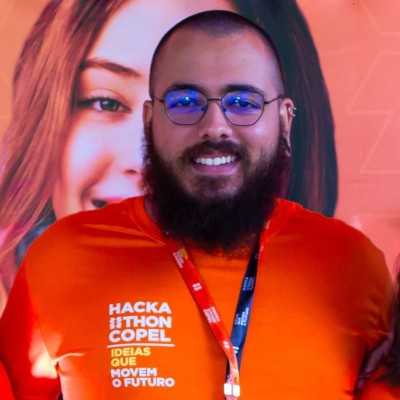

Gabriel Santos Afini da Silva

 E-mail: gsilva.2020@alunos.utfpr.edu.br
E-mail: gsilva.2020@alunos.utfpr.edu.br LinkedIn: linkedin.com/in/seu-perfil
LinkedIn: linkedin.com/in/seu-perfil Cornélio Procópio, Paraná
Cornélio Procópio, Paraná

E-mail: gsilva.2020@alunos.utfpr.edu.brLinkedIn: linkedin.com/in/seu-perfilCornélio Procópio, ParanáSou estudante de Engenharia de Software na UTFPR-CP e apaixonado por tecnologia, aprendizado contínuo e impacto social.
Tenho experiência com Python, orientação a objetos, APIs REST, testes automatizados, mineração de dados e banco de dados com MySQL.